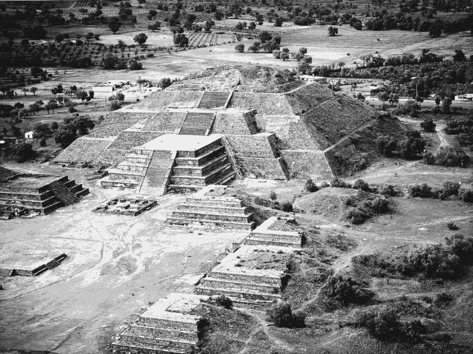
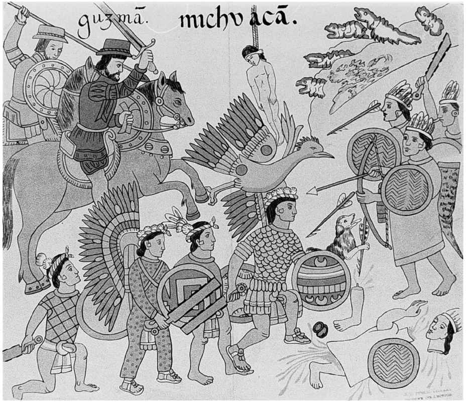
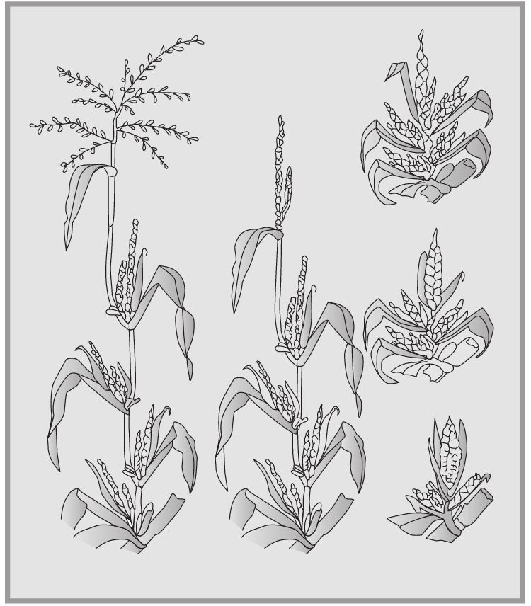

虽然美洲印第安人的这些成就给人以深刻印象，但事实仍然是，仅一小撮西班牙冒险者便能轻易推翻和彻底根除美洲大陆的这三大文明——情况就是这样，尽管这些文明拥有数以千万计的稠密人口。西班牙单方面取胜的原因，最终应归于美洲的与世隔绝。不仅美洲诸印第安文明与其他大陆诸文明相隔绝，不能促进彼此间的相互影响，而且诸印第安文明彼此之间基本上也相隔绝。
［一位考古学家说］关于秘鲁和中美洲之间的相互关系，完全可以说，人们已承认，在从形成期［约公元前1000年］到西班牙人入侵这段漫长的时期内，所有证明这些地区之间存在着相互影响或接触的实物或记录，都是不可靠的。[2]
换句话说，在2500年中，没有任何可靠的证据可证明中美洲文明和秘鲁文明之间存在着相互影响。如我们所知道的那样，在这几千年中，欧亚大陆各地区，还有撒哈拉沙漠以南的非洲，都处在持续不断的交往中（后者是在较小的范围内）。最终结果是，美洲印第安人——甚至是安第斯山脉和中美洲地区的印第安人——远远落后于欧亚人，尤其是落后于技术发展格外早的欧洲人。到公元1500年时，美洲大陆刚进入埃及和美索不达米亚早在约公元前2500年便已达到的文明阶段。
当西班牙人入侵美洲、双方发生对抗时，这究竟意味着什么呢？首先，它意味着：印第安人发现自己在经济和技术上远远落后于侵略者的文明。印第安人高度发展的艺术、科学和宗教，不应用来掩饰他们在更多的物质领域里都极为落后这样一个事实。这种悬殊在中美洲最为明显，但在安第斯山脉地区也普遍存在。农业上，印第安人虽在培植植物方面取得了卓越成就，但在实际生产中却很少生效。他们的耕作技术从未超过养活全体居民所须达到的最低限度，而他们的人口密度也很少达到东半球的水平。他们的工具仅用石头、木头或骨头制成。印第安人不会冶炼矿石，尽管他们也使用金属，但几乎只用于装饰目的。他们所制造的船只有独木舟和远洋木筏。至于陆上运输工具，印第安人还没有利用轮子；他们虽已知道轮子，但只是用作玩具。除美洲驼和羊驼外，人的背是唯一的运输工具；美洲驼和羊驼虽已用于安第斯山脉地区，但不能运载重物。
这一技术落后的直接意义不应被夸大。印第安人用长矛和弓箭对付西班牙人的马和枪，显然处于极为不利的境地。但是，在经历了最初的打击之后，印第安人渐渐习惯了火器和骑兵。而且，西班牙人很快就发现，印第安人的武器非常锋利耐用。他们开始更加喜欢印第安人的棉制盔甲，而不喜欢自己的盔甲。一位征服者叙述道：阿兹特克人有
……两座军火库，里面装满了各种武器，其中许多武器都饰以黄金和宝石。这些武器包括不同规格的盾牌、军刀和一种大砍刀。这种大刀需用双手挥动，刀刃用燧石磨制而成，因此，极其锋利，比我们西班牙人的剑更适合砍杀。此外，长矛也比我们的长，全长6英尺，一端装有尖头，也是用几种锋利的燧石制成的。这种长矛非常锋利坚硬，能刺穿最坚固的盾牌，刺杀起来像剃刀一样便利；墨西哥人甚至用这些石头刮脸。另外，还有极好的弓箭、单头和双头长枪、专用于弹射的皮条，以及为他们特制的圆石投石器和一种大盾牌。这种盾牌结构非常精巧，不用时可以卷起来，只是在战场上才展开，能从头到脚将整个身体遮盖住。[3]
这番言论表明，技术上的悬殊不是促使西班牙人获胜的唯一因素。还有一个因素是，印第安各民族之间缺乏团结。在墨西哥和秘鲁，西班牙人能利用对库斯科和特诺奇蒂特兰的暴虐统治不满的被征服的部落。过于严格的控制和过分的依赖也削弱了印第安人。他们的头脑里被灌输了绝对执行命令的思想，并对此习以为常，因此，当其首领被推翻时，他们不能自己组织起来进行抵抗。一旦国王蒙提祖马和阿塔瓦尔帕落入西班牙人手中，阿兹特克帝国和印加帝国就群龙无首，丧失抵抗力。

图119 月亮金字塔位于特奥蒂瓦坎的中央大道即死亡大道的南端。
这种被动性因宗教的抑制而进一步加剧。当地人认为，墨西哥的科尔特斯和秘鲁的皮萨罗都是回来应验古老预言的神。库斯科的阿塔瓦尔帕和特诺奇蒂特兰的蒙提祖马之所以会发生动摇以致自取灭亡，原因就在于此。对阿塔瓦尔帕来说，西班牙人就是造物神维拉科查及其追随者。为此，这位统治者温顺地等待着皮萨罗的到来；皮萨罗和其手下的180人迅速控制了这个庞大的帝国。同样，对蒙提祖马来说，科尔特斯就是魁扎尔科亚特尔神，他正回来要求他的合法王位。因此，这位统治者也就无精打采地恭候着西班牙人在其首都安营扎寨。
阿兹特克人的战争观念同样使他们遭受灾难；他们认为，战争是短期的，是为宗教仪式尽力。他们在战争中主要关心的是捕捉俘虏，用俘虏的心脏祭神。因此，他们发动的战役常常就是礼仪上的争夺；争夺期间，他们尽可能以最小的混乱和破坏来捕捉俘虏。这种军事传统显然是一大障碍。西班牙人杀人是为了获胜，而阿兹特克人只想捕捉俘虏。

图120 一幅16世纪阿兹特克人的图画，描绘的是西班牙征服墨西哥过程中的一场战斗。
如果说美洲印第安人缺乏击退欧洲人的技术和内聚力，那么更严重的是，他们缺乏抵御欧洲人所带来的种种疾病的免疫力。印第安人在数万年前渡过白令海峡之后没再与其他大陆诸民族有任何联系，所以他们在生理上变得很易受欧洲人及其非洲奴隶所带来的天花、麻疹、斑疹伤寒、黄热病和其他疾病的伤害。
近几年，对1492年前美洲印第安人口的估计数已加以修订，使其急剧上升。现在认为，居住在美洲的人口总数达4300万至7200万。如所预料，绝大部分人都居住在中美洲的三大文明区内。不论居住在哪里，所有印第安人在首次与欧洲人接触时，都以骇人的速度死亡。这就是新到达的移民常常发现被遗弃的田地和无人居住的村庄的原因；他们只需将这些田地和村庄接管过来就行。据估计，1492年墨西哥的人口有2500万，到1608年时，已缩减到100万左右。其他地区的人口数也同样猛跌。1508年，伊斯帕尼奥拉岛（即今日的海地和多米尼加共和国）有6万美洲印第安人，1554年时为3万，至1570年仅剩500人。1586年来自秘鲁的以下这份报告清楚地表明了这场浩劫的规模和所带来的恐怖：
流感不像钢刀那样寒光闪闪，但印第安人都躲不开它。破伤风和斑疹伤寒比一千只目露凶光、口吐白沫的灵更能夺人性命……天花比所有的枪炮能消灭更多的印第安人。四下流行的鼠疫正在使这些地区荒芜。受鼠疫感染的人都倒地身亡：鼠疫吞食人的身躯，啮噬人的眼睛，封住人的喉管。一切都散发出腐臭的气味。[4]
后来，当大批移民开始从欧洲移居美洲时，印第安人陷于绝境，被征服了。最早到来的是商人，他们几乎未遇到任何阻挠和抵抗便渗入美洲各地，因为美洲不像非洲，没有与之抗衡的土著商人阶层。其次是移民，他们被宜人的气候和肥沃的土地所吸引，源源不断地来到这里，淹没了不幸的印第安人。当印第安人在绝望中偶然拿起武器时，却缺乏团结和基本的人力、物力资源，因此注定要失败。格兰德河以北地区的情况尤其如此。那里的印第安人一开始时就十分稀少，因而幸存下来的寥寥无几，他们被赶进印第安人居留地。在阿兹特克人、印加人和玛雅人所在的地区，人口较为稠密，很多人在经历欧洲移民潮后幸存下来。由于他们对欧洲人和非洲人带来的种种疾病产生了免疫力，这些幸存者渐渐地又东山再起。今天，在玻利维亚和危地马拉等国，印第安人为主要人口。1990年，美国人口统计局公布的美国印第安人总数是190万，其中人数最多的是切罗基人（30.8132万），其次是纳瓦霍人（21.9138万）、奇佩瓦人（10.3826万）和苏人（10.3255万）。
很明显，美洲的力量对比完全不同于非洲的力量对比。地理环境，较少的人口，发展水平较低的经济、政治和社会组织，所有这些都对印第安人不利，使欧洲人能占领美洲；而这时在非洲，欧洲人仅在沿海地区占有几个不稳定的小立足点。虽然美洲印第安人不能有效地抵抗欧洲入侵者，但事实依然是，他们对人类的发展做出了突出贡献。这些贡献中最重要的是，他们培育了如今已成为全世界日常饮食支柱的多种植物。最著名的是玉米、马铃薯、大豆（蛋白质的主要来源）、南瓜、西红柿和可可。总之，美洲培育出来的植物与整个东半球几乎一样多——这是一个真正非凡的成就。今天，美国50%以上的农产品都源于原先由印第安人培育的植物。美国是向世界市场提供食品的主要出口商，因此可以说，如果没有美洲印第安先驱者，今日世界的总人口数实际上会低一些。

图121 图中显示的是玉蜀黍经过美洲人驯化变为玉米的过程。
最后，应该指出，正在进行的考古调查研究使我们必须不断修正对美洲印第安人文化的认识。例如，最近的发掘表明，除玛雅文化、阿兹特克文化和印加文化外，在南美洲亚马孙丛林区，可能还存在着第四种文化。这一发现颇让人感兴趣，因为迄今为止，人们一直认为，早期的食物采集者缺乏在热带雨林中生存的技术和技能。不过现在，考古学家们正在发现和分析在亚马孙河口附近，在大约1.1万年前便已被人占用过的洞穴中找到的数千件人工制品和烧焦的剩余食物。这是一种特殊的文化，因为它同美洲印第安人的其他文化不一样，主要依靠的不是猎取大猎物，而是在河流和森林中搜寻食物——处于这种文化中的人主要靠鱼、软体动物、鳖和鸟类过活。